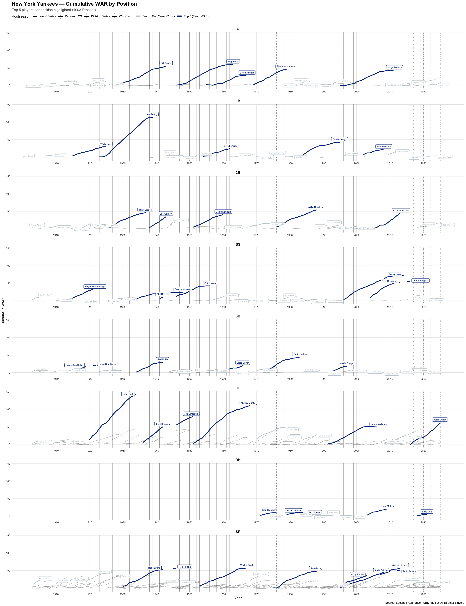

What is this? A position-by-position breakdown of cumulative WAR for each MLB franchise. Each row shows one position (C, 1B, 2B, SS, 3B, OF, DH, SP, RP) with the top 5 players highlighted in the team's primary color.
Reading the chart: Solid team-color lines are the top 5 players by WAR at that position. Secondary-color lines show the "best in gap years" — players who led the position when no top-5 player was active. Gray lines show everyone else. Vertical lines mark postseason achievements.
Stint detection: Lines break when a player leaves and returns to the franchise, so you can see separate tenures (e.g., Ken Griffey Jr.'s two stints with Seattle).
